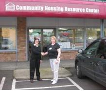
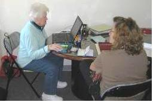

Serving taxpayers in Clark and Skamania Counties, including the Vancouver Metropolitan area (Vancouver, Camas, Battle Ground, Hazel Dell, and Salmon Creek) and Cowlitz and Wahkiakum Counties, including the Longview/Kelso area
You’re getting a nice refund on your tax return and probably already have it spent. Before you do, I hope that you will consider the services that are offered at the Community Housing Resource Center (CHRC). This nonprofit organization is a Tax-Aide program partner and one of 14 tax preparation sites in the AARP SW Washington Taxaide program.
 Why not direct deposit your refund into a savings account until you have given yourself the opportunity to explore home ownership or work on resolving credit and debt issues. This may sound like a dream beyond your expectations, but you might be surprised.
The CHRC offers numerous programs that may help you realize a dream you never thought could happen. Do yourself a favor and attend a “Get the Facts” workshop, CreditSmart®, a financial education class, or a first-time homebuyer class. The Center also provides counseling services for credit repair, debt management, budget counseling, reverse mortgages, and mortgage default counseling. All classes are free and there is a $50 charge for the one-on-one counseling services. The cost includes your credit report.
The first step is to make an appointment to have your tax return completed by a Tax-Aide counselor. They will complete the return, electronically file it, give you a printed copy of the return for your records and have your refund electronically deposited into your checking or savings account all free of charge. While you are at the Center sign up for the 90 minute “Get the Facts” educational workshop intended to dispel the common misconceptions about buying a home, credit and managing money.
The CHRC Tax-Aide tax preparation site is a pilot project, and the only SW Washingtion Tax-Aide site requiring appointments. The site has three IRS certified tax preparers who volunteer four hours a day from 11am until 3pm Monday thru Thursday.
2700 NE Andersen Rd, Suite D3
360-694-8664 x105
Across from K-Mart on Andersen Road between Mill Plain and 4th Plain Blvd.
The AARP Tax-Aide SW Washington Leadership group provides content and the web site is maintained by Chris Hughes.
Copyright 2008-2009 AARP Tax-Aide SW Washington District 1 All rights reserved.